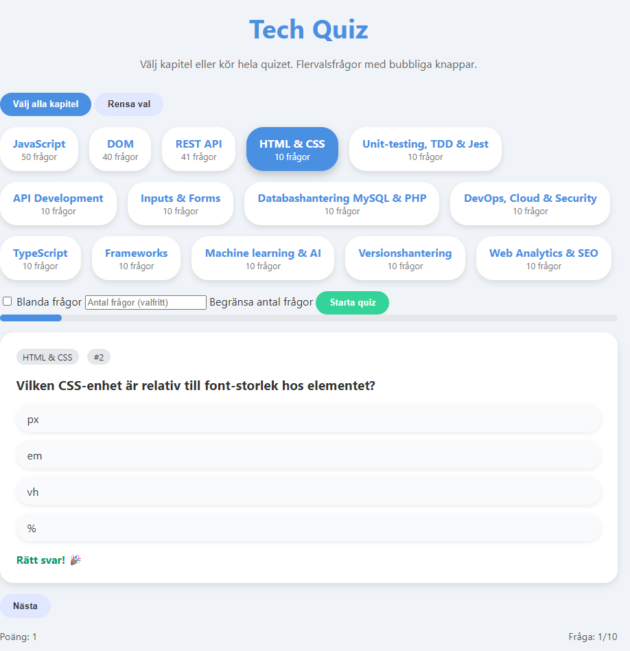

Quiz

En enkel och interaktiv quiz byggd med HTML, CSS och JavaScript, skapad för att öva på modulär kodstruktur, DOM‑hantering och användarvänlig design. Frågorna uppdateras dynamiskt medan användaren klickar sig vidare, och gränssnittet är utformat för att vara tydligt, tillgängligt och lätt att använda. Projektet håller reda på poängen under spelets gång och visar resultatet när quizen är avslutad, vilket gör det till en smidig och pedagogisk övning i både logik och frontend‑utveckling.